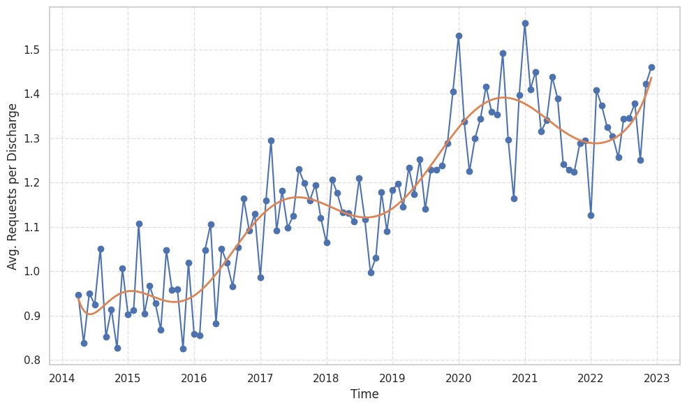

Temporal Patterns in Discharge Summary Requests
Insights from Large Language Model Extraction
When a patient leaves hospital, discharge summaries often contain requests for GPs to carry out follow-up care. But how has this workload changed over time, and what does it mean for primary care?
Using large language models (LLMs), we analysed 260,000 hospital episodes over nearly a decade to track these requests. We found a 52% increase in requests per discharge, alongside longer completion timeframes and growing volumes of informational messages. Our findings reveal an increasing and often hidden transfer of workload from hospitals to GPs, with important implications for primary care resources and discharge policy.

Average follow-up requests per discharge increased over the study period.

The average requested timeframe for completing follow-up care became longer over time.